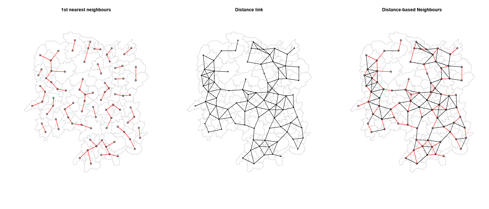
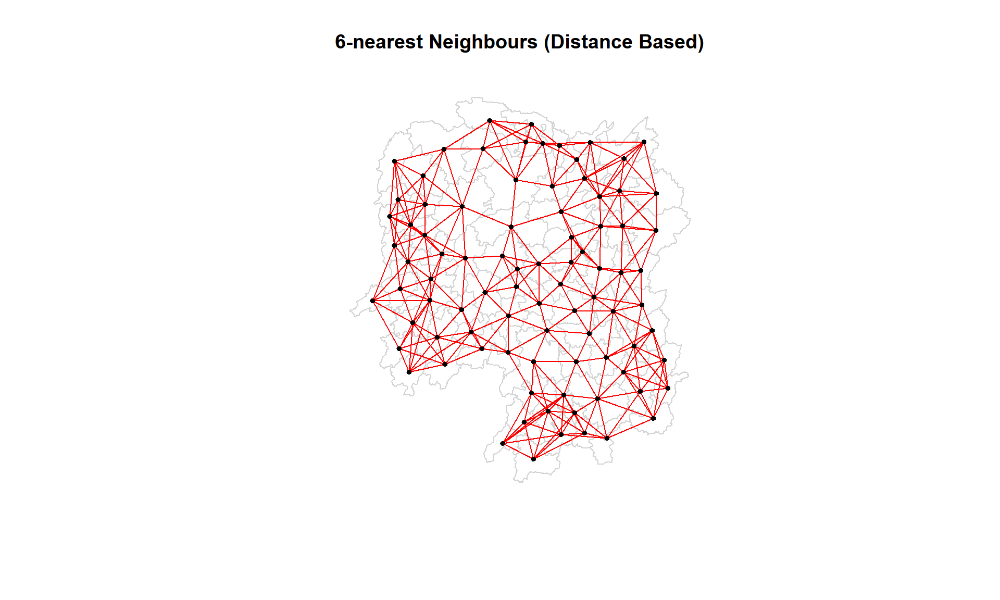
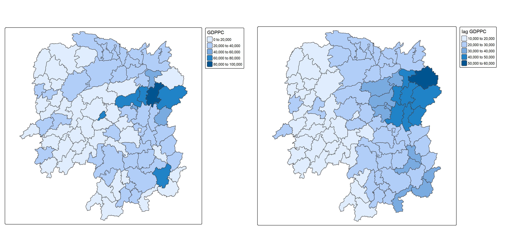
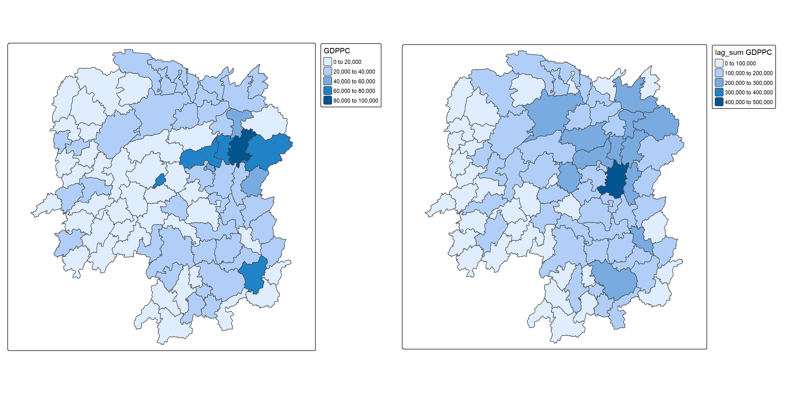
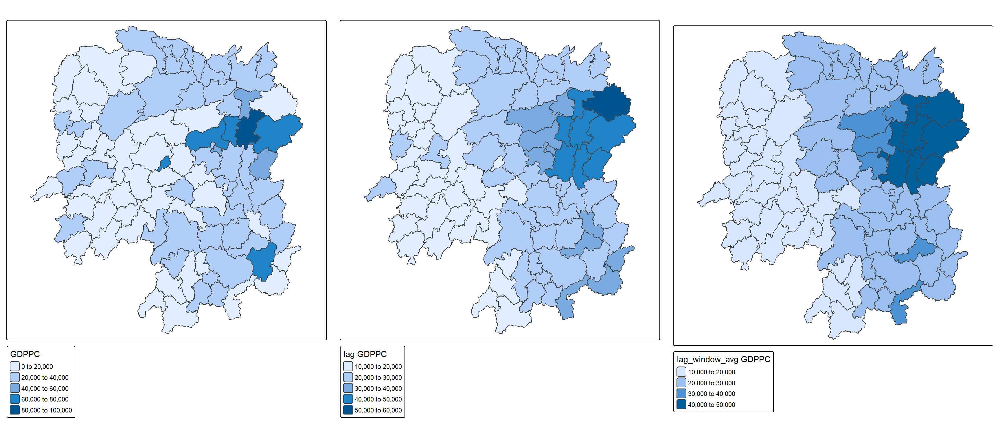
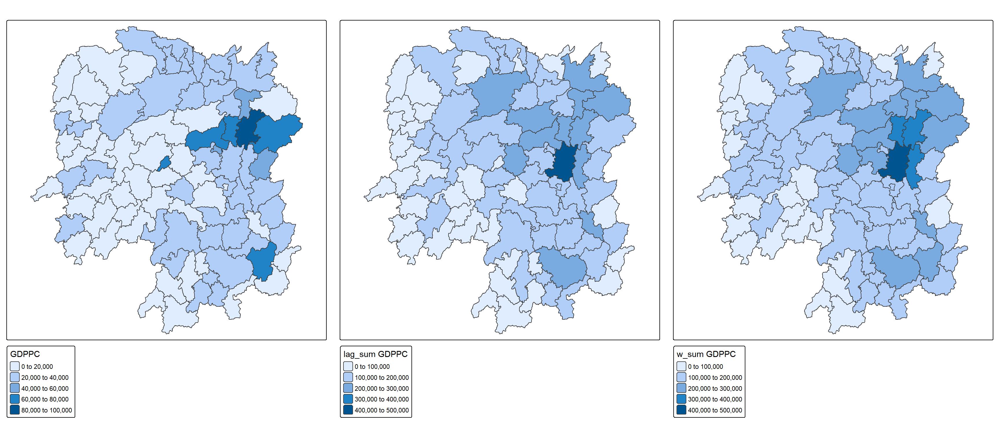
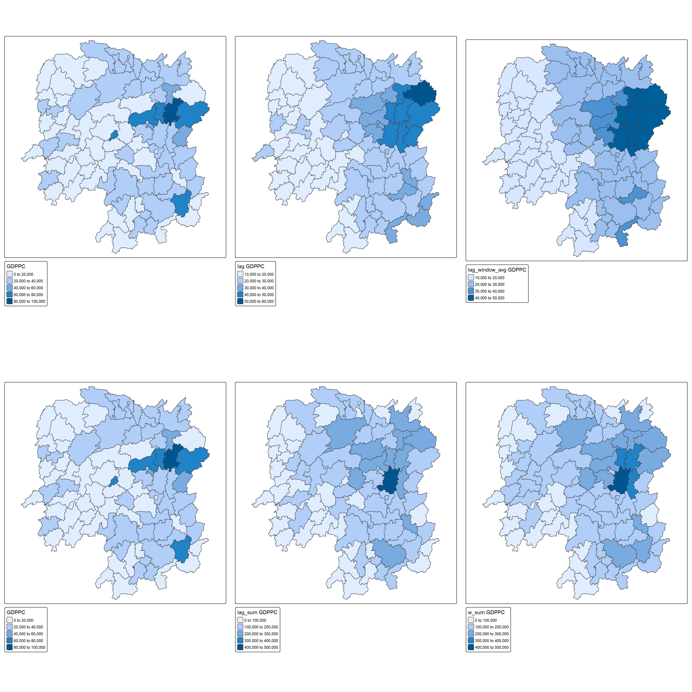

pacman:: p_load(sf, spdep, knitr, tmap, tidyverse)04: Spatial Weights and Applications
1 Overview
In this exercise, we apply spatial weights in a practical implementation in R.
Spatial data are rarely independent which often violates the independence assumptions of classical statistics (e.g., regression or ANOVA).Properly defining and weighting neighbours is crucial to account for spatial autocorrelation and avoid biased outcomes. Through it, we can understand who influences whom and how strong the influence is.
2 The Study Area and Data
The following two data sets are used here:
Geospatial data: Hunan county boundary layer in
shapefileformatAspatial data:
Hunan_2012.csvfor Hunan’s local development indicators in 2012.
2.1 Getting started
A total of five R packages will be used in this exercise.
| Package | Description |
|---|---|
| sf | Simple Features, a new R package which handles importing, managing, and processing vector-based geospatial data. |
| spdep | Tools for computing spatial weights and calculating spatially lagged variables. |
| knitr | Provides useful functions for dynamic document generation. |
| tmap | Creates cartographic quality static or interactive choropleth maps. |
| tidyverse | A collection of R packages for data import, cleaning, transformation, and visualisation (e.g., readr, dplyr, tidyr, ggplot2). |
After installation via install.packages(), we load them into R environment using the code below.
3 Importing Data into R
In this section, we import above-mentioned two data sets into the R environment by using st_read() from sf package for geospatial data and read_csv() from readr of tiyeverse family.
3.1 Importing sharefile File
The code chunk below uses st_read() to import the Hunan county layer in sharefile format to R as an sf object for spatial analysis.
hunan <- st_read(dsn = "data/geospatial",
layer = "Hunan")Reading layer `Hunan' from data source
`C:\lsrgc\ISSS626-yiqiong-pan\Hands-on_Ex\Hands-on_Ex04\data\geospatial'
using driver `ESRI Shapefile'
Simple feature collection with 88 features and 7 fields
Geometry type: POLYGON
Dimension: XY
Bounding box: xmin: 108.7831 ymin: 24.6342 xmax: 114.2544 ymax: 30.12812
Geodetic CRS: WGS 84glimpse(hunan)Rows: 88
Columns: 8
$ NAME_2 <chr> "Changde", "Changde", "Changde", "Changde", "Changde", "Cha…
$ ID_3 <int> 21098, 21100, 21101, 21102, 21103, 21104, 21109, 21110, 211…
$ NAME_3 <chr> "Anxiang", "Hanshou", "Jinshi", "Li", "Linli", "Shimen", "L…
$ ENGTYPE_3 <chr> "County", "County", "County City", "County", "County", "Cou…
$ Shape_Leng <dbl> 1.869074, 2.360691, 1.425620, 3.474325, 2.289506, 4.171918,…
$ Shape_Area <dbl> 0.10056190, 0.19978745, 0.05302413, 0.18908121, 0.11450357,…
$ County <chr> "Anxiang", "Hanshou", "Jinshi", "Li", "Linli", "Shimen", "L…
$ geometry <POLYGON [°]> POLYGON ((112.0625 29.75523..., POLYGON ((112.2288 …tm_shape(hunan) +
tm_polygons() +
tm_text("NAME_3", size = 0.3)
3.2 Importing csv File
The code chunk uses read_csv() of readr to import the attribute table of local development indicators in 2012.
hunan2012 <- read_csv("data/aspatial/Hunan_2012.csv")
glimpse(hunan2012)Rows: 88
Columns: 29
$ County <chr> "Anhua", "Anren", "Anxiang", "Baojing", "Chaling", "Changn…
$ City <chr> "Yiyang", "Chenzhou", "Changde", "Hunan West", "Zhuzhou", …
$ avg_wage <dbl> 30544, 28058, 31935, 30843, 31251, 28518, 54540, 28597, 33…
$ deposite <dbl> 10967.0, 4598.9, 5517.2, 2250.0, 8241.4, 10860.0, 24332.0,…
$ FAI <dbl> 6831.7, 6386.1, 3541.0, 1005.4, 6508.4, 7920.0, 33624.0, 1…
$ Gov_Rev <dbl> 456.72, 220.57, 243.64, 192.59, 620.19, 769.86, 5350.00, 1…
$ Gov_Exp <dbl> 2703.0, 1454.7, 1779.5, 1379.1, 1947.0, 2631.6, 7885.5, 11…
$ GDP <dbl> 13225.0, 4941.2, 12482.0, 4087.9, 11585.0, 19886.0, 88009.…
$ GDPPC <dbl> 14567, 12761, 23667, 14563, 20078, 24418, 88656, 10132, 17…
$ GIO <dbl> 9276.90, 4189.20, 5108.90, 3623.50, 9157.70, 37392.00, 513…
$ Loan <dbl> 3954.90, 2555.30, 2806.90, 1253.70, 4287.40, 4242.80, 4053…
$ NIPCR <dbl> 3528.3, 3271.8, 7693.7, 4191.3, 3887.7, 9528.0, 17070.0, 3…
$ Bed <dbl> 2718, 970, 1931, 927, 1449, 3605, 3310, 582, 2170, 2179, 1…
$ Emp <dbl> 494.310, 290.820, 336.390, 195.170, 330.290, 548.610, 670.…
$ EmpR <dbl> 441.4, 255.4, 270.5, 145.6, 299.0, 415.1, 452.0, 127.6, 21…
$ EmpRT <dbl> 338.0, 99.4, 205.9, 116.4, 154.0, 273.7, 219.4, 94.4, 174.…
$ Pri_Stu <dbl> 54.175, 33.171, 19.584, 19.249, 33.906, 81.831, 59.151, 18…
$ Sec_Stu <dbl> 32.830, 17.505, 17.819, 11.831, 20.548, 44.485, 39.685, 7.…
$ Household <dbl> 290.4, 104.6, 148.1, 73.2, 148.7, 211.2, 300.3, 76.1, 139.…
$ Household_R <dbl> 234.5, 121.9, 135.4, 69.9, 139.4, 211.7, 248.4, 59.6, 110.…
$ NOIP <dbl> 101, 34, 53, 18, 106, 115, 214, 17, 55, 70, 44, 84, 74, 17…
$ Pop_R <dbl> 670.3, 243.2, 346.0, 184.1, 301.6, 448.2, 475.1, 189.6, 31…
$ RSCG <dbl> 5760.60, 2386.40, 3957.90, 768.04, 4009.50, 5220.40, 22604…
$ Pop_T <dbl> 910.8, 388.7, 528.3, 281.3, 578.4, 816.3, 998.6, 256.7, 45…
$ Agri <dbl> 4942.253, 2357.764, 4524.410, 1118.561, 3793.550, 6430.782…
$ Service <dbl> 5414.5, 3814.1, 14100.0, 541.8, 5444.0, 13074.6, 17726.6, …
$ Disp_Inc <dbl> 12373, 16072, 16610, 13455, 20461, 20868, 183252, 12379, 1…
$ RORP <dbl> 0.7359464, 0.6256753, 0.6549309, 0.6544614, 0.5214385, 0.5…
$ ROREmp <dbl> 0.8929619, 0.8782065, 0.8041262, 0.7460163, 0.9052651, 0.7…class(hunan2012)[1] "spec_tbl_df" "tbl_df" "tbl" "data.frame" 3.3 Performing Relational Join
The code chunk uses left_join() of dplyr package from tidyverse to append the attribute table of hunan the spatial polygon data frame with the attribute fields of hunan2012 data frame by = join_by(County) and selects required fields.
colnames(hunan)[1] "NAME_2" "ID_3" "NAME_3" "ENGTYPE_3" "Shape_Leng"
[6] "Shape_Area" "County" "geometry" colnames(hunan2012) [1] "County" "City" "avg_wage" "deposite" "FAI"
[6] "Gov_Rev" "Gov_Exp" "GDP" "GDPPC" "GIO"
[11] "Loan" "NIPCR" "Bed" "Emp" "EmpR"
[16] "EmpRT" "Pri_Stu" "Sec_Stu" "Household" "Household_R"
[21] "NOIP" "Pop_R" "RSCG" "Pop_T" "Agri"
[26] "Service" "Disp_Inc" "RORP" "ROREmp" hunan_jn <- left_join(hunan, hunan2012)
colnames(hunan_jn) [1] "NAME_2" "ID_3" "NAME_3" "ENGTYPE_3" "Shape_Leng"
[6] "Shape_Area" "County" "City" "avg_wage" "deposite"
[11] "FAI" "Gov_Rev" "Gov_Exp" "GDP" "GDPPC"
[16] "GIO" "Loan" "NIPCR" "Bed" "Emp"
[21] "EmpR" "EmpRT" "Pri_Stu" "Sec_Stu" "Household"
[26] "Household_R" "NOIP" "Pop_R" "RSCG" "Pop_T"
[31] "Agri" "Service" "Disp_Inc" "RORP" "ROREmp"
[36] "geometry" hunan<- hunan_jn %>%
select(1:4, 7, 15)
glimpse(hunan)Rows: 88
Columns: 7
$ NAME_2 <chr> "Changde", "Changde", "Changde", "Changde", "Changde", "Chan…
$ ID_3 <int> 21098, 21100, 21101, 21102, 21103, 21104, 21109, 21110, 2111…
$ NAME_3 <chr> "Anxiang", "Hanshou", "Jinshi", "Li", "Linli", "Shimen", "Li…
$ ENGTYPE_3 <chr> "County", "County", "County City", "County", "County", "Coun…
$ County <chr> "Anxiang", "Hanshou", "Jinshi", "Li", "Linli", "Shimen", "Li…
$ GDPPC <dbl> 23667, 20981, 34592, 24473, 25554, 27137, 63118, 62202, 7066…
$ geometry <POLYGON [°]> POLYGON ((112.0625 29.75523..., POLYGON ((112.2288 2…hunanSimple feature collection with 88 features and 6 fields
Geometry type: POLYGON
Dimension: XY
Bounding box: xmin: 108.7831 ymin: 24.6342 xmax: 114.2544 ymax: 30.12812
Geodetic CRS: WGS 84
First 10 features:
NAME_2 ID_3 NAME_3 ENGTYPE_3 County GDPPC
1 Changde 21098 Anxiang County Anxiang 23667
2 Changde 21100 Hanshou County Hanshou 20981
3 Changde 21101 Jinshi County City Jinshi 34592
4 Changde 21102 Li County Li 24473
5 Changde 21103 Linli County Linli 25554
6 Changde 21104 Shimen County Shimen 27137
7 Changsha 21109 Liuyang County City Liuyang 63118
8 Changsha 21110 Ningxiang County Ningxiang 62202
9 Changsha 21111 Wangcheng County Wangcheng 70666
10 Chenzhou 21112 Anren County Anren 12761
geometry
1 POLYGON ((112.0625 29.75523...
2 POLYGON ((112.2288 29.11684...
3 POLYGON ((111.8927 29.6013,...
4 POLYGON ((111.3731 29.94649...
5 POLYGON ((111.6324 29.76288...
6 POLYGON ((110.8825 30.11675...
7 POLYGON ((113.9905 28.5682,...
8 POLYGON ((112.7181 28.38299...
9 POLYGON ((112.7914 28.52688...
10 POLYGON ((113.1757 26.82734...4 Visualising Regional Development Indicator
Next we use tm_polygons() to create a base map and use qtm() also from tmap to create a choropleth map to show the distribution of GDP per capita GDPPC 2012.
basemap <- tm_shape(hunan) +
tm_polygons() +
tm_text("NAME_3", size = 0.5)
gdppc <- qtm(hunan, "GDPPC") +
tm_layout(
legend.position = c("left", "bottom"))
tmap_arrange(basemap, gdppc, asp = 1, ncol =2)
Note
Quick summary:
The side-by-side maps show that the distribution of GDP per capita (GDPPC) across Hunan Province is not evenly spread. The majority of counties record values below 60K. The darkest-shaded area is Changsha, which has the highest GDPPC, ranging from 80K to 100K, with income gradually decreasing as one moves outward from the capital circle. Outside of this core, two other counties stand out with GDPPC between 60K and 80K: Lengshuikeng, located in central Hunan, and Zixing in the southeast.
5 Computing Contiguity Spatial Weights
Neighbours could be defined by using: Contiguity (shared border).
(Insee & Eurostat, 2018) Contiguity-defined neighbourhoods are widely used in demographic and social studies. Several types of contiguity can be distinguished. In Rook contiguity, two neighbourhoods are considered adjacent if they share at least two common boundary points (i.e., a full edge). On the other hand, Queen contiguity requires only one common boundary point (e.g., an edge or a vertex). As a result, the number of neighbours defined under Queen contiguity is always greater than or equal to those defined under Rook contiguity.
Next, we use poly2nb() of spdep package to calculate contiguity weights metrics for the study area hunan.The function allows us to specify the type of contiguity by setting the queen argument to either TRUE (Queen contiguity) or FALSE (Rook contiguity).
The code chunk below returns QUEEN contiguity weight matrix.
From the summary statistics, we learn that the dataset contains 88 counties, with a total of 448 neighbour connections across all regions. Among these, percentage of actual neighbour links relative to all possible links is 5.79%. On average, each county has about five neighbours.
Looking at the link number distribution, we see that region ID 85 is the most connected, with 11 neighbours, while region ID 30 and 65 are the least connected, each having only one neighbour. Most counties have between four and six neighbours, which is consistent with the average of five links per region.
wm_q <- poly2nb(hunan, queen = TRUE)
summary(wm_q)Neighbour list object:
Number of regions: 88
Number of nonzero links: 448
Percentage nonzero weights: 5.785124
Average number of links: 5.090909
Link number distribution:
1 2 3 4 5 6 7 8 9 11
2 2 12 16 24 14 11 4 2 1
2 least connected regions:
30 65 with 1 link
1 most connected region:
85 with 11 linksBy using the index code chunk below, we can print the list of neighbour ploygons for most-connected region 85.The numbers represent the polygon IDs as stored in hunan SpatialPolygonsDataFrame class.
Further, we can retrieve the county name of region 85 by looking it up in the hunan dataset, specifically using the syntax dataset$column[i], which returns the corresponding value in that column.
We can also retrieve 11 neighbouring county names by using thec() function to concatenate the required region IDs inside the indexing operation.
wm_q[[85]] [1] 1 2 3 5 6 32 56 57 69 75 78class(wm_q[[85]])[1] "integer"hunan$County[85][1] "Taoyuan"hunan$NAME_3[c(1, 2, 3, 5, 6, 32, 56, 57, 69, 75, 78)] [1] "Anxiang" "Hanshou" "Jinshi" "Linli" "Shimen" "Yuanling"
[7] "Anhua" "Nan" "Cili" "Sangzhi" "Taojiang"We can also wrap both steps together once we get familiar with the data frames.
hunan$NAME_3[wm_q[[85]]] [1] "Anxiang" "Hanshou" "Jinshi" "Linli" "Shimen" "Yuanling"
[7] "Anhua" "Nan" "Cili" "Sangzhi" "Taojiang"To simplify the code and reduce the risk of syntax errors, we can first assign the neighbour indices of a given region to a helper variable then retieve the corresponding GDPPC values.
nb1 <- wm_q[[1]]
hunan$GDPPC[nb1][1] 20981 34592 24473 21311 22879summary(hunan$GDPPC[nb1]) Min. 1st Qu. Median Mean 3rd Qu. Max.
20981 21311 22879 24847 24473 34592 Additionally, we can also use the structure function str() to display the complete matrix.
str(wm_q)List of 88
$ : int [1:5] 2 3 4 57 85
$ : int [1:5] 1 57 58 78 85
$ : int [1:4] 1 4 5 85
$ : int [1:4] 1 3 5 6
$ : int [1:4] 3 4 6 85
$ : int [1:5] 4 5 69 75 85
$ : int [1:4] 67 71 74 84
$ : int [1:7] 9 46 47 56 78 80 86
$ : int [1:6] 8 66 68 78 84 86
$ : int [1:8] 16 17 19 20 22 70 72 73
$ : int [1:3] 14 17 72
$ : int [1:5] 13 60 61 63 83
$ : int [1:4] 12 15 60 83
$ : int [1:3] 11 15 17
$ : int [1:4] 13 14 17 83
$ : int [1:5] 10 17 22 72 83
$ : int [1:7] 10 11 14 15 16 72 83
$ : int [1:5] 20 22 23 77 83
$ : int [1:6] 10 20 21 73 74 86
$ : int [1:7] 10 18 19 21 22 23 82
$ : int [1:5] 19 20 35 82 86
$ : int [1:5] 10 16 18 20 83
$ : int [1:7] 18 20 38 41 77 79 82
$ : int [1:5] 25 28 31 32 54
$ : int [1:5] 24 28 31 33 81
$ : int [1:4] 27 33 42 81
$ : int [1:3] 26 29 42
$ : int [1:5] 24 25 33 49 54
$ : int [1:3] 27 37 42
$ : int 33
$ : int [1:8] 24 25 32 36 39 40 56 81
$ : int [1:8] 24 31 50 54 55 56 75 85
$ : int [1:5] 25 26 28 30 81
$ : int [1:3] 36 45 80
$ : int [1:6] 21 41 47 80 82 86
$ : int [1:6] 31 34 40 45 56 80
$ : int [1:4] 29 42 43 44
$ : int [1:4] 23 44 77 79
$ : int [1:5] 31 40 42 43 81
$ : int [1:6] 31 36 39 43 45 79
$ : int [1:6] 23 35 45 79 80 82
$ : int [1:7] 26 27 29 37 39 43 81
$ : int [1:6] 37 39 40 42 44 79
$ : int [1:4] 37 38 43 79
$ : int [1:6] 34 36 40 41 79 80
$ : int [1:3] 8 47 86
$ : int [1:5] 8 35 46 80 86
$ : int [1:5] 50 51 52 53 55
$ : int [1:4] 28 51 52 54
$ : int [1:5] 32 48 52 54 55
$ : int [1:3] 48 49 52
$ : int [1:5] 48 49 50 51 54
$ : int [1:3] 48 55 75
$ : int [1:6] 24 28 32 49 50 52
$ : int [1:5] 32 48 50 53 75
$ : int [1:7] 8 31 32 36 78 80 85
$ : int [1:6] 1 2 58 64 76 85
$ : int [1:5] 2 57 68 76 78
$ : int [1:4] 60 61 87 88
$ : int [1:4] 12 13 59 61
$ : int [1:7] 12 59 60 62 63 77 87
$ : int [1:3] 61 77 87
$ : int [1:4] 12 61 77 83
$ : int [1:2] 57 76
$ : int 76
$ : int [1:5] 9 67 68 76 84
$ : int [1:4] 7 66 76 84
$ : int [1:5] 9 58 66 76 78
$ : int [1:3] 6 75 85
$ : int [1:3] 10 72 73
$ : int [1:3] 7 73 74
$ : int [1:5] 10 11 16 17 70
$ : int [1:5] 10 19 70 71 74
$ : int [1:6] 7 19 71 73 84 86
$ : int [1:6] 6 32 53 55 69 85
$ : int [1:7] 57 58 64 65 66 67 68
$ : int [1:7] 18 23 38 61 62 63 83
$ : int [1:7] 2 8 9 56 58 68 85
$ : int [1:7] 23 38 40 41 43 44 45
$ : int [1:8] 8 34 35 36 41 45 47 56
$ : int [1:6] 25 26 31 33 39 42
$ : int [1:5] 20 21 23 35 41
$ : int [1:9] 12 13 15 16 17 18 22 63 77
$ : int [1:6] 7 9 66 67 74 86
$ : int [1:11] 1 2 3 5 6 32 56 57 69 75 ...
$ : int [1:9] 8 9 19 21 35 46 47 74 84
$ : int [1:4] 59 61 62 88
$ : int [1:2] 59 87
- attr(*, "class")= chr "nb"
- attr(*, "region.id")= chr [1:88] "1" "2" "3" "4" ...
- attr(*, "call")= language poly2nb(pl = hunan, queen = TRUE)
- attr(*, "type")= chr "queen"
- attr(*, "snap")= num 9e-08
- attr(*, "sym")= logi TRUE
- attr(*, "ncomp")=List of 2
..$ nc : int 1
..$ comp.id: int [1:88] 1 1 1 1 1 1 1 1 1 1 ...As mentioned earlier, the measurement type can be easily switched to Rook mode by disabling the queen argument. The code chunk below uses poly2nb() to compute the Rook contiguity weight matrix.
wm_r <- poly2nb(hunan, queen = FALSE)
summary(wm_r)Neighbour list object:
Number of regions: 88
Number of nonzero links: 440
Percentage nonzero weights: 5.681818
Average number of links: 5
Link number distribution:
1 2 3 4 5 6 7 8 9 10
2 2 12 20 21 14 11 3 2 1
2 least connected regions:
30 65 with 1 link
1 most connected region:
85 with 10 linksThe summary shows that there are 88 regions in the dataset, with a total of 440 possible neighbour connections. Among these, percentage of actual neighbour links relative to all possible links is 5.68%. On average, each region has around five neighbours. Similarly, one region is the most connected, with 10 Rook neighbours, while regions 30 and 65 are the least connected, each having only one link.
The code chunk below retreives the region ID 85’s neighbour names and GDPPC under ROOK.
We used the setdiff(a, b) function to identify the neighbours included under Queen contiguity but not under Rook. The result returned region ID 57, named Nan. It is unclear whether this indicates a missing value. However, the county is located at the northeast vertex of region 85 (Taoyuan) according to the baseline map.
wm_r[[85]] [1] 1 2 3 5 6 32 56 69 75 78hunan$County[85][1] "Taoyuan"hunan$NAME_3[wm_r[[85]]] [1] "Anxiang" "Hanshou" "Jinshi" "Linli" "Shimen" "Yuanling"
[7] "Anhua" "Cili" "Sangzhi" "Taojiang"hunan$GDPPC[wm_r[[85]]] [1] 23667 20981 34592 25554 27137 24194 14567 18714 14624 19509setdiff(hunan$NAME_3[wm_q[[85]]], hunan$NAME_3[wm_r[[85]]]) [1] "Nan"setdiff(wm_q[[85]], wm_r[[85]]) [1] 57A connectivity graph shows polygons as points and draws lines to their neighbours. To build this, we need a point for each polygon, usually the centroid.
Using sf, we calculate centroids, then extract longitude and latitude into two separate numeric objects. This is done by mapping st_centroid over the geometry column (us.bound) with map_dbl from purrr.
Longitude: access with
[[1]]Latitude: access with
[[2]]
The above gives numeric vectors of coordinates for use in graph construction.
longitude <- map_dbl(hunan$geometry, ~st_centroid(.x)[[1]])
class(longitude)[1] "numeric"latitude <- map_dbl(hunan$geometry, ~st_centroid(.x)[[2]])Next we use cbind() to combine longitude and latitude and create a matrix object.
longitude latitude
[1,] 112.1531 29.44362
[2,] 112.0372 28.86489
[3,] 111.8917 29.47107
[4,] 111.7031 29.74499
[5,] 111.6138 29.49258
[6,] 111.0341 29.79863The code chunk below use plot() from base R to create two maps one for QUEEN contiguity based and one for ROOK contiguity based. It also overlays two sets of maps for comparison.
par(mfrow = c(1,2))
plot(hunan$geometry, border = "lightgrey",
main = "QUEEN Contiguity") # countries base map
plot(wm_q, coords, # centroid coords of each polygon
pch = 19, # solid circles
cex = 0.6, # shrinks point size to 60%
add = TRUE, # overlays this coords with base map
col = "red") # connecting line in red
plot(hunan$geometry, border = "lightgrey",
main = "ROOK Contiguity") # countries base map
plot(wm_r, coords, # centroid coords of each polygon
pch = 19, # solid circles
cex = 0.6, # shrinks point size to 60%
add = TRUE, # overlays this coords with base map
col = "red") # connecting line in red

Here we visualise setdiff() differences in connectivity between Queen and Rook contiguity.
The comparison map above highlights the additional 4 neighbour links (equally unidirectional 8 nonzero entries), captured by Queen in blue.
The most connected region, Taoyuan (in the north), has 11 neighbours under Queen and 10 under Rook. One corner-touching neighbour is excluded in the Rook method due to its definition. Similar differences can also be observed in the lower northeast part of the province, where Queen contiguity identifies additional vertex-based neighbours that Rook does not.
6 Computing Distance Based Neighbours
We could also define neighbours based on distances (within k kilometres). Here we usednearneigh() of spdep package to compute distance-based weight matrices.
The function finds nearby points around a region based on straight-line distance. You can set a minimum distance (d1) and a maximum distance (d2) using the bounds argument.
If date is in a normal flat coordinate system (like projected x-y coordinates), it just uses Euclidean Distance.
If the coordinates are in latitude and longitude (not projected), and you set longlat=TRUE, the function works out distances along the Earth’s surface (great-circle distance, like the curved route a plane would fly) in kilometres, using the WGS84 Earth model.
The steps show how to compute the upper distance bound.
- Use
knearneigh()from spdep to compute the k nearest neighbors for each point. This produces an index matrix identifying which points are the nearest neighbors of each other.
#coords <- st_coordinates(st_centroid(hunan)) #similar results of centroid generated in visual preparation
#head(coords)
k1 <- knearneigh(coords, k=1)
summary(k1) Length Class Mode
nn 88 -none- numeric
np 1 -none- numeric
k 1 -none- numeric
dimension 1 -none- numeric
x 176 -none- numeric- Convert the
knearneighobject to annblist (neighborhood list) withknn2nb(). The resulting object stores integer vectors of neighbour IDs for each region (i.e.,valuecolumn contains region id who is the neighour of [[i]] i-th region inhunan).
k1<- knn2nb(k1)
k1Neighbour list object:
Number of regions: 88
Number of nonzero links: 88
Percentage nonzero weights: 1.136364
Average number of links: 1
25 disjoint connected subgraphs
Non-symmetric neighbours list- Use
nbdist()from spdep to calculate the lengths of the neighbour edges (distances between neighbours), expressed in kilometers (if longlat=TRUE).
k1dists <- nbdists(k1, coords, longlat = TRUE)
head(k1dists)[[1]]
[1] 25.53398
[[2]]
[1] 43.03114
[[3]]
[1] 25.53398
[[4]]
[1] 29.2848
[[5]]
[1] 29.2848
[[6]]
[1] 45.98097- Apply
unlist()to flatten the list structure of the distances into a single numeric vector, so we can directly inspect or compute statistics (like the maximum distance = the upper bound).
Min. 1st Qu. Median Mean 3rd Qu. Max.
24.79 32.57 38.01 39.07 44.52 61.79 The table above shows the largest first-nearest-neighbor distance is 61.79 km, which qualifies as the upper bound. This is because at that distance, every unit in the dataset has at least one neighbor.
The code chunk below uses dnearneigh() to compute the distance weight matrix nb class.
wm_d62 <- dnearneigh(coords, 0, 62, longlat = TRUE)
wm_d62Neighbour list object:
Number of regions: 88
Number of nonzero links: 324
Percentage nonzero weights: 4.183884
Average number of links: 3.681818 wm_d62[[85]][1] 2 5The Summary Statistics shows across all 88 regions, there are 324 neighbouring edges and on avearge each reagion has 3.68 neighbours.
The code chunk below can display the contents of the matrix, though the outcome is not shown here. We can also call the index of the nb list to display the neigbhours of i-th region, for example with wm_d62[[85]]. The value entries in wm_d62 contain the actual neighbors of the i-th region according to the neighbour distance.
str(wm_d62)Alternatively, we can combine table() and card() of spdep to display the structure of weight matrix. Tode chunk cross-tabulates each county hunan$County against the cardinality of its neighbor list card(wm_d62), which counts how many neighbours each region has.
1 2 3 4 5 6
Anhua 1 0 0 0 0 0
Anren 0 0 0 1 0 0
Anxiang 0 0 0 0 1 0
Baojing 0 0 0 0 1 0
Chaling 0 0 1 0 0 0
Changning 0 0 1 0 0 0Number of cases in table: 88
Number of factors: 2
Test for independence of all factors:
Chisq = 440, df = 435, p-value = 0.4241
Chi-squared approximation may be incorrectThe statistics indicate there is no significant evidence that two variables (county and cardinality) are dependent. However, the results might not be reliable since the table is essential a one-hot encoding.
n.comp.nb(nb.obj)checks connectivity in the dataset. nc means 1 connected component.
n_comp <- n.comp.nb(wm_d62)
n_comp$nc[1] 1table() code chunk confirms all 88 counties together as a single connected component.
table(n_comp$comp.id)
1
88 The code chunk below plots the distance weight matrix. The first left map shows connections based on 1st nearest neighbours while the following shows all neighbours based on cut-off boundary of 62km.
par(mfrow=c(1,3))
plot(hunan$geometry, border="lightgrey", main="1st nearest neighbours")
plot(k1, coords, add=TRUE, col="red", length=0.08)
plot(hunan$geometry, border="lightgrey", main="Distance link")
plot(wm_d62, coords, add=TRUE, pch = 19, cex = 0.6)
plot(hunan$geometry, border = "lightgrey", main = "Distance-based Neighbours")
plot(wm_d62, coords,add = TRUE)
plot(k1, coords, add = TRUE, col = "red", length = 0.08)
With a fixed distance band (e.g., 62 km), every county links to all neighbours within that radius. This contradicts modern urban geographic characteristics (heterogeneity) and may cause over-smoothing, which blurs local signals (weaker LISA extremes), inflates dependence (causing unnecessary Moran’s I), leaves sparse border/rural counties with few links, and introduces bias in models.
Adaptive weights (k-nearest neighbours) are preferrable when densities vary a lot, since they equalise neighbour counts and allow fairer comparison. That means every region gets exactly k neighbours, no matter if it is crowded or isolated.
Asymmetric kNN is applicable for directional insights since region A may list region B among its k nearest neighbours while region B does not list A. On the other hand, enforced symmetric kNN sym=TRUE is better for connectivity and interpretability.
We select the smallest k that yields a connected graph and confirm robustness via sensitivity checks.
Rule-of-thumb: start with k∈[4,8], check connectivity, and run sensitivity (k = 4, 6, 8 …). Pick the smallest k that is connected and stable.
The code chunk below creates 6 non-symmetric nearest neighbours for each region. We observe nonzero links are 528, higher than previous methods.
knn6 <- knn2nb(knearneigh(coords, k=6))
knn6Neighbour list object:
Number of regions: 88
Number of nonzero links: 528
Percentage nonzero weights: 6.818182
Average number of links: 6
Non-symmetric neighbours listThe code chunk below can display the contents of the matrix, though the outcome is not shown here. We can also call the index of the nb list to display the neigbhours of i-th region, for example with knn6[[85]]. summary(knn6) confirms that no region is more or less connected than another under k-nearest neighbours. The neighbour count is fixed at six for all.
str(knn6)knn6[[85]][1] 2 3 4 5 56 69summary(knn6)Neighbour list object:
Number of regions: 88
Number of nonzero links: 528
Percentage nonzero weights: 6.818182
Average number of links: 6
Non-symmetric neighbours list
Link number distribution:
6
88
88 least connected regions:
1 2 3 4 5 6 7 8 9 10 11 12 13 14 15 16 17 18 19 20 21 22 23 24 25 26 27 28 29 30 31 32 33 34 35 36 37 38 39 40 41 42 43 44 45 46 47 48 49 50 51 52 53 54 55 56 57 58 59 60 61 62 63 64 65 66 67 68 69 70 71 72 73 74 75 76 77 78 79 80 81 82 83 84 85 86 87 88 with 6 links
88 most connected regions:
1 2 3 4 5 6 7 8 9 10 11 12 13 14 15 16 17 18 19 20 21 22 23 24 25 26 27 28 29 30 31 32 33 34 35 36 37 38 39 40 41 42 43 44 45 46 47 48 49 50 51 52 53 54 55 56 57 58 59 60 61 62 63 64 65 66 67 68 69 70 71 72 73 74 75 76 77 78 79 80 81 82 83 84 85 86 87 88 with 6 linksAlternatively, we can check the table of cardinality per region using the code chunk below.
6
Anhua 1
Anren 1
Anxiang 1
Baojing 1
Chaling 1
Changning 1Number of cases in table: 88
Number of factors: 2
Test for independence of all factors:
Chisq = 0, df = 0, p-value = 1
Chi-squared approximation may be incorrectThe code chunk below plots the adaptive weights matrix.

Note
Plotting Guide:
-
pch= plotting character (the marker shape) for the node points drawing at each centroid.
Common codes: 1 open circle, 16/19 solid circle (19 is a larger solid dot), 15 solid square, 17 solid triangle, 0–25 are predefined shapes.
For pch 21–25 you can also set bg (fill color) in addition to col (border).
-
cex= character expansion (size scale) for the markers (and text, when used with text).
cex = 1 is default; 0.6 makes the dots smaller; 1.5 would make them larger.
- Lines (connections) are controlled separately:
col: line color,
lwd: line width,
lty: line type (solid, dashed, etc.).
- Directed kNN extras (if plotting asymmetric kNN):
arrows = TRUE adds arrowheads,
length controls arrowhead length (e.g., length = 0.08), not point size.
7 Weights Based on IDW (Inversed Distance Method)
In this section we compute a spatial weigh matrix with Inversed Distance Method (IDW) based on QUEEN Contiguity based matrix.
The code chunk below uses `nbdists() from spdep (spatial dependence) package compute distances between areas.
dist <- nbdists(wm_q, coords, longlat = TRUE)
head(dist,3)[[1]]
[1] 65.12941 25.53398 54.91802 35.61352 87.32760
[[2]]
[1] 65.12941 56.67944 51.92312 43.03114 58.16151
[[3]]
[1] 25.53398 35.43536 27.05778 71.64530[[1]]
[1] 0.01535405 0.03916350 0.01820896 0.02807922 0.01145113
[[2]]
[1] 0.01535405 0.01764308 0.01925924 0.02323898 0.01719350
[[3]]
[1] 0.03916350 0.02822040 0.03695795 0.01395765
Note
built-in R lambda functions (Statology, n.d.)
apply(X, MARGIN, FUN): X is the name of the matrix or data frame
lapply(X, FUN) : X is the name of the list, vector, or data frame
sapply(X, FUN): returns a vector instead of a list (could return a list depending on vector length)
tapply(X, INDEX, FUN): X is the name of the object, typically a vector
FUN is the specific operation you want to perform (e.g. min, max, sum, mean, etc.)
8 Row-standardised Weights Matrix
Each neighbouring polygon is assigned an equal weight (style=“W”), calculated as 1/ number of neighbors.
The weighted income values are then summed.
This simple approach can bias results for edge polygons, which have fewer neighbours and may distort spatial autocorrelation.
For this example, we use style=“W” for simplicity, though more robust alternatives like style=“B” (Binary (1/0) are available.
The code chunk uses nb2listw() to turn neighbour list wm_q matrix to into weights object. zero.policy = TRUE assigns 0 weights to island (zero link) and avoid errors.
rswm_q <- nb2listw(wm_q, style = "W", zero.policy = TRUE)
rswm_qCharacteristics of weights list object:
Neighbour list object:
Number of regions: 88
Number of nonzero links: 448
Percentage nonzero weights: 5.785124
Average number of links: 5.090909
Weights style: W
Weights constants summary:
n nn S0 S1 S2
W 88 7744 88 37.86334 365.9147There are three columns in rswm_q (class listw): style, neighbours and weights. Summary of neighbouts shows the distribution of number of neighours. For example, the most connected region is ID 85. The weights column stores equal weights based on the number of neighbours. For instance, region 85 has 11 links, so each neighbour of 85 is assigned a weight of 1/11 (adjacency decay).
summary(rswm_q$neighbours)Neighbour list object:
Number of regions: 88
Number of nonzero links: 448
Percentage nonzero weights: 5.785124
Average number of links: 5.090909
Link number distribution:
1 2 3 4 5 6 7 8 9 11
2 2 12 16 24 14 11 4 2 1
2 least connected regions:
30 65 with 1 link
1 most connected region:
85 with 11 linkshead(rswm_q$weights,3)[[1]]
[1] 0.2 0.2 0.2 0.2 0.2
[[2]]
[1] 0.2 0.2 0.2 0.2 0.2
[[3]]
[1] 0.25 0.25 0.25 0.25rswm_q$weights[85][[1]]
[1] 0.09090909 0.09090909 0.09090909 0.09090909 0.09090909 0.09090909
[7] 0.09090909 0.09090909 0.09090909 0.09090909 0.09090909 Min. 1st Qu. Median Mean 3rd Qu. Max.
0.09091 0.14286 0.20000 0.19643 0.20000 1.00000 To demonstrate the difference, the code chunk below calls style = B and uses previously created IDW distance decay ids (closer neighbours carry more weight) to create Inverse Distance Weights matrix.
rswm_ids <- nb2listw(wm_q, glist=ids, style="B", zero.policy=TRUE)
rswm_idsCharacteristics of weights list object:
Neighbour list object:
Number of regions: 88
Number of nonzero links: 448
Percentage nonzero weights: 5.785124
Average number of links: 5.090909
Weights style: B
Weights constants summary:
n nn S0 S1 S2
B 88 7744 8.786867 0.3776535 3.8137summary(rswm_ids$neighbours)Neighbour list object:
Number of regions: 88
Number of nonzero links: 448
Percentage nonzero weights: 5.785124
Average number of links: 5.090909
Link number distribution:
1 2 3 4 5 6 7 8 9 11
2 2 12 16 24 14 11 4 2 1
2 least connected regions:
30 65 with 1 link
1 most connected region:
85 with 11 linkshead(rswm_ids$weights,3)[[1]]
[1] 0.01535405 0.03916350 0.01820896 0.02807922 0.01145113
[[2]]
[1] 0.01535405 0.01764308 0.01925924 0.02323898 0.01719350
[[3]]
[1] 0.03916350 0.02822040 0.03695795 0.01395765rswm_ids$weights[85][[1]]
[1] 0.011451133 0.017193502 0.013957649 0.016183544 0.009810297 0.010656545
[7] 0.013416965 0.009903702 0.014199260 0.008217581 0.011407794length(rswm_q$neighbours[[85]])[1] 11length(rswm_q$weights[[85]])[1] 11 Min. 1st Qu. Median Mean 3rd Qu. Max.
0.008218 0.015088 0.018739 0.019614 0.022823 0.040338
Note
Here are a few combinations for weighting neighbours
- Equal neighbour weights (row-standardised):
rswm_q<- nb2listw(wm_q, style = "W", zero.policy = TRUE) # no glist
summary(rswm_q$neighbours)Neighbour list object:
Number of regions: 88
Number of nonzero links: 448
Percentage nonzero weights: 5.785124
Average number of links: 5.090909
Link number distribution:
1 2 3 4 5 6 7 8 9 11
2 2 12 16 24 14 11 4 2 1
2 least connected regions:
30 65 with 1 link
1 most connected region:
85 with 11 links Min. 1st Qu. Median Mean 3rd Qu. Max.
0.09091 0.14286 0.20000 0.19643 0.20000 1.00000 - IDW, unstandardised (raw 1/d):
rswm_ids <- nb2listw(wm_q, glist = ids, style = "B", zero.policy = TRUE)
summary(rswm_ids$neighbours)Neighbour list object:
Number of regions: 88
Number of nonzero links: 448
Percentage nonzero weights: 5.785124
Average number of links: 5.090909
Link number distribution:
1 2 3 4 5 6 7 8 9 11
2 2 12 16 24 14 11 4 2 1
2 least connected regions:
30 65 with 1 link
1 most connected region:
85 with 11 links Min. 1st Qu. Median Mean 3rd Qu. Max.
0.008218 0.015088 0.018739 0.019614 0.022823 0.040338 - IDW, row-standardised (sums to 1 per row):
rswm_ids_W <- nb2listw(wm_q, glist = ids, style = "W", zero.policy = TRUE)
summary(rswm_ids_W$neighbours)Neighbour list object:
Number of regions: 88
Number of nonzero links: 448
Percentage nonzero weights: 5.785124
Average number of links: 5.090909
Link number distribution:
1 2 3 4 5 6 7 8 9 11
2 2 12 16 24 14 11 4 2 1
2 least connected regions:
30 65 with 1 link
1 most connected region:
85 with 11 links Min. 1st Qu. Median Mean 3rd Qu. Max.
0.05894 0.13342 0.17603 0.19643 0.23961 1.00000 - Pure binary adjacency (0/1):
rswm_bin <- nb2listw(wm_q, style = "B", zero.policy = TRUE)
summary(rswm_bin$neighbours)Neighbour list object:
Number of regions: 88
Number of nonzero links: 448
Percentage nonzero weights: 5.785124
Average number of links: 5.090909
Link number distribution:
1 2 3 4 5 6 7 8 9 11
2 2 12 16 24 14 11 4 2 1
2 least connected regions:
30 65 with 1 link
1 most connected region:
85 with 11 links Min. 1st Qu. Median Mean 3rd Qu. Max.
1 1 1 1 1 1 9 Application of Spatial Weight Matrix
In this section, we try out four different spatial lagged variables:
spatial lag with row-standardised weights,
spatial lag as a sum of neighbouring values,
spatial window average, and
spatial window sum.
The code chunk below use lag.listw() to compute the average neighbor GDPPC value for each polygon, often referred to as spatially lagged values. The summary shows the average of Region ID 1’s neighours GDPPC is 24847.20 and average for full data set is 24282.
GDPPC.lag <- lag.listw(rswm_q, hunan$GDPPC)
head(GDPPC.lag)[1] 24847.20 22724.80 24143.25 27737.50 27270.25 21248.80summary(GDPPC.lag) Min. 1st Qu. Median Mean 3rd Qu. Max.
11566 17462 21962 24282 28038 55158 The code chunk below retrieve GDPPC of 5 neibours of region id 1.
nb1 <- wm_q[[1]]
nb1 <- hunan$GDPPC[nb1]
summary(nb1) Min. 1st Qu. Median Mean 3rd Qu. Max.
20981 21311 22879 24847 24473 34592 meaning of Spatial lag with row-standardized weights:
With row-standardised weights (style=“W”), the spatial lag at area i is the neighbour average of the variable GDPPC.
The code chunk below adds the spatially lag GDPPC values onto hunan sf data frame.
lag.list <- lst(hunan$NAME_3, lag.listw(rswm_q, hunan$GDPPC))
lag.res <- as.data.frame(lag.list)
head(lag.res, 3) hunan.NAME_3 lag.listw.rswm_q..hunan.GDPPC.
1 Anxiang 24847.20
2 Hanshou 22724.80
3 Jinshi 24143.25summary(lag.res) hunan.NAME_3 lag.listw.rswm_q..hunan.GDPPC.
Length:88 Min. :11566
Class :character 1st Qu.:17462
Mode :character Median :21962
Mean :24282
3rd Qu.:28038
Max. :55158 Now let’s have a look at the newly created hunan with spatially lagged GDPPC.
head(hunan)Simple feature collection with 6 features and 7 fields
Geometry type: POLYGON
Dimension: XY
Bounding box: xmin: 110.4922 ymin: 28.61762 xmax: 112.3013 ymax: 30.12812
Geodetic CRS: WGS 84
NAME_2 ID_3 NAME_3 ENGTYPE_3 County GDPPC lag GDPPC
1 Changde 21098 Anxiang County Anxiang 23667 24847.20
2 Changde 21100 Hanshou County Hanshou 20981 22724.80
3 Changde 21101 Jinshi County City Jinshi 34592 24143.25
4 Changde 21102 Li County Li 24473 27737.50
5 Changde 21103 Linli County Linli 25554 27270.25
6 Changde 21104 Shimen County Shimen 27137 21248.80
geometry
1 POLYGON ((112.0625 29.75523...
2 POLYGON ((112.2288 29.11684...
3 POLYGON ((111.8927 29.6013,...
4 POLYGON ((111.3731 29.94649...
5 POLYGON ((111.6324 29.76288...
6 POLYGON ((110.8825 30.11675...The code chunk next plots both GDPPC and spatial lag GDPPC for comparison.
gdppc <- qtm(hunan, "GDPPC")
lag_gdppc <- qtm(hunan, "lag GDPPC")
tmap_arrange(gdppc, lag_gdppc, asp=1, ncol=2)
To compute spatial lag as the sum of neighbours, use binary weights (1 per neighbour). Build a weight list of ones for each neighbour vector, then pass it via glist with style="B" (no standardisation), so weight returns sums of neighbourhood number, not 0/1.
The code chunk below assigns the weights to each region.
[[1]]
[1] 1 1 1 1 1
[[2]]
[1] 1 1 1 1 1
[[3]]
[1] 1 1 1 1 Min. 1st Qu. Median Mean 3rd Qu. Max.
1 1 1 1 1 1 Meaning of Spatial lag as a sum of neighboring values: It is based on total value of of all neighours, not an average. e.g. region 1’s sum would be 5 x average value = 124326
We use lag.listw() to calculate the lag variable for GDPPC using the weights.
[[1]]
[1] "Anxiang" "Hanshou" "Jinshi" "Li"
[5] "Linli" "Shimen" "Liuyang" "Ningxiang"
[9] "Wangcheng" "Anren" "Guidong" "Jiahe"
[13] "Linwu" "Rucheng" "Yizhang" "Yongxing"
[17] "Zixing" "Changning" "Hengdong" "Hengnan"
[21] "Hengshan" "Leiyang" "Qidong" "Chenxi"
[25] "Zhongfang" "Huitong" "Jingzhou" "Mayang"
[29] "Tongdao" "Xinhuang" "Xupu" "Yuanling"
[33] "Zhijiang" "Lengshuijiang" "Shuangfeng" "Xinhua"
[37] "Chengbu" "Dongan" "Dongkou" "Longhui"
[41] "Shaodong" "Suining" "Wugang" "Xinning"
[45] "Xinshao" "Shaoshan" "Xiangxiang" "Baojing"
[49] "Fenghuang" "Guzhang" "Huayuan" "Jishou"
[53] "Longshan" "Luxi" "Yongshun" "Anhua"
[57] "Nan" "Yuanjiang" "Jianghua" "Lanshan"
[61] "Ningyuan" "Shuangpai" "Xintian" "Huarong"
[65] "Linxiang" "Miluo" "Pingjiang" "Xiangyin"
[69] "Cili" "Chaling" "Liling" "Yanling"
[73] "You" "Zhuzhou" "Sangzhi" "Yueyang"
[77] "Qiyang" "Taojiang" "Shaoyang" "Lianyuan"
[81] "Hongjiang" "Hengyang" "Guiyang" "Changsha"
[85] "Taoyuan" "Xiangtan" "Dao" "Jiangyong"
[[2]]
[1] 124236 113624 96573 110950 109081 106244 174988 235079 273907 256221
[11] 98013 104050 102846 92017 133831 158446 141883 119508 150757 153324
[21] 113593 129594 142149 100119 82884 74668 43184 99244 46549 20518
[31] 140576 121601 92069 43258 144567 132119 51694 59024 69349 73780
[41] 94651 100680 69398 52798 140472 118623 180933 82798 83090 97356
[51] 59482 77334 38777 111463 74715 174391 150558 122144 68012 84575
[61] 143045 51394 98279 47671 26360 236917 220631 185290 64640 70046
[71] 126971 144693 129404 284074 112268 203611 145238 251536 108078 238300
[81] 108870 108085 262835 248182 244850 404456 67608 33860lag.res <- as.data.frame(lag_sum)
colnames(lag.res) <- c("NAME_3", "lag_sum GDPPC")
head(lag.res) NAME_3 lag_sum GDPPC
1 Anxiang 124236
2 Hanshou 113624
3 Jinshi 96573
4 Li 110950
5 Linli 109081
6 Shimen 106244hunan <- left_join(hunan, lag.res)
head(hunan,3)Simple feature collection with 3 features and 8 fields
Geometry type: POLYGON
Dimension: XY
Bounding box: xmin: 111.7027 ymin: 28.61762 xmax: 112.3013 ymax: 29.77344
Geodetic CRS: WGS 84
NAME_2 ID_3 NAME_3 ENGTYPE_3 County GDPPC lag GDPPC lag_sum GDPPC
1 Changde 21098 Anxiang County Anxiang 23667 24847.20 124236
2 Changde 21100 Hanshou County Hanshou 20981 22724.80 113624
3 Changde 21101 Jinshi County City Jinshi 34592 24143.25 96573
geometry
1 POLYGON ((112.0625 29.75523...
2 POLYGON ((112.2288 29.11684...
3 POLYGON ((111.8927 29.6013,...Here we plot both the GDPPC and Spatial Lag Sum GDPPC for comparison.
gdppc <- qtm(hunan, "GDPPC")
lag_sum_gdppc <- qtm(hunan, "lag_sum GDPPC")
tmap_arrange(gdppc, lag_sum_gdppc, asp = 1, ncol = 2)
The spacial window average uses row-standardised weights and includes the diagonal element which could be done by using include.self() from spdep package.
wm_qs <- include.self(wm_q)
wm_qNeighbour list object:
Number of regions: 88
Number of nonzero links: 448
Percentage nonzero weights: 5.785124
Average number of links: 5.090909 wm_qsNeighbour list object:
Number of regions: 88
Number of nonzero links: 536
Percentage nonzero weights: 6.921488
Average number of links: 6.090909 Here we observe all links are inflated and the region ID itself is included in the neighbour’s list.
wm_qs[[1]][1] 1 2 3 4 57 85The code chunk uses nb2listw() to compute the weights.
wm_qs <- nb2listw(wm_qs)
summary(wm_qs$neighbours)Neighbour list object:
Number of regions: 88
Number of nonzero links: 536
Percentage nonzero weights: 6.921488
Average number of links: 6.090909
Link number distribution:
2 3 4 5 6 7 8 9 10 12
2 2 12 16 24 14 11 4 2 1
2 least connected regions:
30 65 with 2 links
1 most connected region:
85 with 12 links Min. 1st Qu. Median Mean 3rd Qu. Max.
0.08333 0.12500 0.16667 0.16418 0.20000 0.50000 Again, we use nb2listw() and glist() to explicitly assign weight values. DID WE?
The code chunk below creates the lag variable from weight structure and GDPPC variable.
lag_w_avg_gpdpc <- lag.listw(wm_qs,hunan$GDPPC)
lag_w_avg_gpdpc [1] 24650.50 22434.17 26233.00 27084.60 26927.00 22230.17 47621.20 37160.12
[9] 49224.71 29886.89 26627.50 22690.17 25366.40 25825.75 30329.00 32682.83
[17] 25948.62 23987.67 25463.14 21904.38 23127.50 25949.83 20018.75 19524.17
[25] 18955.00 17800.40 15883.00 18831.33 14832.50 17965.00 17159.89 16199.44
[33] 18764.50 26878.75 23188.86 20788.14 12365.20 15985.00 13764.83 11907.43
[41] 17128.14 14593.62 11644.29 12706.00 21712.29 43548.25 35049.00 16226.83
[49] 19294.40 18156.00 19954.75 18145.17 12132.75 18419.29 14050.83 23619.75
[57] 24552.71 24733.67 16762.60 20932.60 19467.75 18334.00 22541.00 26028.00
[65] 29128.50 46569.00 47576.60 36545.50 20838.50 22531.00 42115.50 27619.00
[73] 27611.33 44523.29 18127.43 28746.38 20734.50 33880.62 14716.38 28516.22
[81] 18086.14 21244.50 29568.80 48119.71 22310.75 43151.60 17133.40 17009.33summary(lag_w_avg_gpdpc) Min. 1st Qu. Median Mean 3rd Qu. Max.
11644 18117 22372 24322 27216 49225 Next we add the spatial window average to the hunan main dataset and tidy up the columns.
lag.list.wm_qs <- list(hunan$NAME_3, lag.listw(wm_qs, hunan$GDPPC))
lag_wm_qs.res <- as.data.frame(lag.list.wm_qs)
colnames(lag_wm_qs.res) <- c("NAME_3", "lag_window_avg GDPPC")
hunan <- left_join(hunan, lag_wm_qs.res)
head(hunan, 3)Simple feature collection with 3 features and 9 fields
Geometry type: POLYGON
Dimension: XY
Bounding box: xmin: 111.7027 ymin: 28.61762 xmax: 112.3013 ymax: 29.77344
Geodetic CRS: WGS 84
NAME_2 ID_3 NAME_3 ENGTYPE_3 County GDPPC lag GDPPC lag_sum GDPPC
1 Changde 21098 Anxiang County Anxiang 23667 24847.20 124236
2 Changde 21100 Hanshou County Hanshou 20981 22724.80 113624
3 Changde 21101 Jinshi County City Jinshi 34592 24143.25 96573
lag_window_avg GDPPC geometry
1 24650.50 POLYGON ((112.0625 29.75523...
2 22434.17 POLYGON ((112.2288 29.11684...
3 26233.00 POLYGON ((111.8927 29.6013,...The code chunk below uses kable() of Knitr to display the required columns neatly and nicely.
kable1 <- hunan %>%
select("County", "GDPPC", "lag GDPPC",
"lag_window_avg GDPPC") %>%
kable()
kable1| County | GDPPC | lag GDPPC | lag_window_avg GDPPC | geometry |
|---|---|---|---|---|
| Anxiang | 23667 | 24847.20 | 24650.50 | POLYGON ((112.0625 29.75523… |
| Hanshou | 20981 | 22724.80 | 22434.17 | POLYGON ((112.2288 29.11684… |
| Jinshi | 34592 | 24143.25 | 26233.00 | POLYGON ((111.8927 29.6013,… |
| Li | 24473 | 27737.50 | 27084.60 | POLYGON ((111.3731 29.94649… |
| Linli | 25554 | 27270.25 | 26927.00 | POLYGON ((111.6324 29.76288… |
| Shimen | 27137 | 21248.80 | 22230.17 | POLYGON ((110.8825 30.11675… |
| Liuyang | 63118 | 43747.00 | 47621.20 | POLYGON ((113.9905 28.5682,… |
| Ningxiang | 62202 | 33582.71 | 37160.12 | POLYGON ((112.7181 28.38299… |
| Wangcheng | 70666 | 45651.17 | 49224.71 | POLYGON ((112.7914 28.52688… |
| Anren | 12761 | 32027.62 | 29886.89 | POLYGON ((113.1757 26.82734… |
| Guidong | 8497 | 32671.00 | 26627.50 | POLYGON ((114.1799 26.20117… |
| Jiahe | 32091 | 20810.00 | 22690.17 | POLYGON ((112.4425 25.74358… |
| Linwu | 23986 | 25711.50 | 25366.40 | POLYGON ((112.5914 25.55143… |
| Rucheng | 11286 | 30672.33 | 25825.75 | POLYGON ((113.6759 25.87578… |
| Yizhang | 17814 | 33457.75 | 30329.00 | POLYGON ((113.2621 25.68394… |
| Yongxing | 37651 | 31689.20 | 32682.83 | POLYGON ((113.3169 26.41843… |
| Zixing | 65706 | 20269.00 | 25948.62 | POLYGON ((113.7311 26.16259… |
| Changning | 24418 | 23901.60 | 23987.67 | POLYGON ((112.6144 26.60198… |
| Hengdong | 27485 | 25126.17 | 25463.14 | POLYGON ((113.1056 27.21007… |
| Hengnan | 21911 | 21903.43 | 21904.38 | POLYGON ((112.7599 26.98149… |
| Hengshan | 25172 | 22718.60 | 23127.50 | POLYGON ((112.607 27.4689, … |
| Leiyang | 26105 | 25918.80 | 25949.83 | POLYGON ((112.9996 26.69276… |
| Qidong | 18001 | 20307.00 | 20018.75 | POLYGON ((111.7818 27.0383,… |
| Chenxi | 17026 | 20023.80 | 19524.17 | POLYGON ((110.2624 28.21778… |
| Zhongfang | 30846 | 16576.80 | 18955.00 | POLYGON ((109.9431 27.72858… |
| Huitong | 14334 | 18667.00 | 17800.40 | POLYGON ((109.9419 27.10512… |
| Jingzhou | 20348 | 14394.67 | 15883.00 | POLYGON ((109.8186 26.75842… |
| Mayang | 13744 | 19848.80 | 18831.33 | POLYGON ((109.795 27.98008,… |
| Tongdao | 12781 | 15516.33 | 14832.50 | POLYGON ((109.9294 26.46561… |
| Xinhuang | 15412 | 20518.00 | 17965.00 | POLYGON ((109.227 27.43733,… |
| Xupu | 13863 | 17572.00 | 17159.89 | POLYGON ((110.7189 28.30485… |
| Yuanling | 24194 | 15200.12 | 16199.44 | POLYGON ((110.9652 28.99895… |
| Zhijiang | 20518 | 18413.80 | 18764.50 | POLYGON ((109.8818 27.60661… |
| Lengshuijiang | 64257 | 14419.33 | 26878.75 | POLYGON ((111.5307 27.81472… |
| Shuangfeng | 17755 | 24094.50 | 23188.86 | POLYGON ((112.263 27.70421,… |
| Xinhua | 13398 | 22019.83 | 20788.14 | POLYGON ((111.3345 28.19642… |
| Chengbu | 10132 | 12923.50 | 12365.20 | POLYGON ((110.4455 26.69317… |
| Dongan | 20901 | 14756.00 | 15985.00 | POLYGON ((111.4531 26.86812… |
| Dongkou | 13240 | 13869.80 | 13764.83 | POLYGON ((110.6622 27.37305… |
| Longhui | 9572 | 12296.67 | 11907.43 | POLYGON ((110.985 27.65983,… |
| Shaodong | 25246 | 15775.17 | 17128.14 | POLYGON ((111.9054 27.40254… |
| Suining | 16069 | 14382.86 | 14593.62 | POLYGON ((110.389 27.10006,… |
| Wugang | 12112 | 11566.33 | 11644.29 | POLYGON ((110.9878 27.03345… |
| Xinning | 10732 | 13199.50 | 12706.00 | POLYGON ((111.0736 26.84627… |
| Xinshao | 11514 | 23412.00 | 21712.29 | POLYGON ((111.6013 27.58275… |
| Shaoshan | 55570 | 39541.00 | 43548.25 | POLYGON ((112.5391 27.97742… |
| Xiangxiang | 29361 | 36186.60 | 35049.00 | POLYGON ((112.4549 28.05783… |
| Baojing | 14563 | 16559.60 | 16226.83 | POLYGON ((109.7015 28.82844… |
| Fenghuang | 13382 | 20772.50 | 19294.40 | POLYGON ((109.5239 28.19206… |
| Guzhang | 11580 | 19471.20 | 18156.00 | POLYGON ((109.8968 28.74034… |
| Huayuan | 20337 | 19827.33 | 19954.75 | POLYGON ((109.5647 28.61712… |
| Jishou | 31537 | 15466.80 | 18145.17 | POLYGON ((109.8375 28.4696,… |
| Longshan | 9754 | 12925.67 | 12132.75 | POLYGON ((109.6337 29.62521… |
| Luxi | 17472 | 18577.17 | 18419.29 | POLYGON ((110.1067 28.41835… |
| Yongshun | 9590 | 14943.00 | 14050.83 | POLYGON ((110.0003 29.29499… |
| Anhua | 14567 | 24913.00 | 23619.75 | POLYGON ((111.6034 28.63716… |
| Nan | 21311 | 25093.00 | 24552.71 | POLYGON ((112.3232 29.46074… |
| Yuanjiang | 26258 | 24428.80 | 24733.67 | POLYGON ((112.4391 29.1791,… |
| Jianghua | 15801 | 17003.00 | 16762.60 | POLYGON ((111.6461 25.29661… |
| Lanshan | 20088 | 21143.75 | 20932.60 | POLYGON ((112.2286 25.61123… |
| Ningyuan | 12697 | 20435.00 | 19467.75 | POLYGON ((112.0715 26.09892… |
| Shuangpai | 21942 | 17131.33 | 18334.00 | POLYGON ((111.8864 26.11957… |
| Xintian | 14426 | 24569.75 | 22541.00 | POLYGON ((112.2578 26.0796,… |
| Huarong | 30413 | 23835.50 | 26028.00 | POLYGON ((112.9242 29.69134… |
| Linxiang | 31897 | 26360.00 | 29128.50 | POLYGON ((113.5502 29.67418… |
| Miluo | 42497 | 47383.40 | 46569.00 | POLYGON ((112.9902 29.02139… |
| Pingjiang | 17252 | 55157.75 | 47576.60 | POLYGON ((113.8436 29.06152… |
| Xiangyin | 33983 | 37058.00 | 36545.50 | POLYGON ((112.9173 28.98264… |
| Cili | 18714 | 21546.67 | 20838.50 | POLYGON ((110.8822 29.69017… |
| Chaling | 20078 | 23348.67 | 22531.00 | POLYGON ((113.7666 27.10573… |
| Liling | 41491 | 42323.67 | 42115.50 | POLYGON ((113.5673 27.94346… |
| Yanling | 21021 | 28938.60 | 27619.00 | POLYGON ((113.9292 26.6154,… |
| You | 36264 | 25880.80 | 27611.33 | POLYGON ((113.5879 27.41324… |
| Zhuzhou | 27589 | 47345.67 | 44523.29 | POLYGON ((113.2493 28.02411… |
| Sangzhi | 14624 | 18711.33 | 18127.43 | POLYGON ((110.556 29.40543,… |
| Yueyang | 26360 | 29087.29 | 28746.38 | POLYGON ((113.343 29.61064,… |
| Qiyang | 20638 | 20748.29 | 20734.50 | POLYGON ((111.5563 26.81318… |
| Taojiang | 19509 | 35933.71 | 33880.62 | POLYGON ((112.0508 28.67265… |
| Shaoyang | 9653 | 15439.71 | 14716.38 | POLYGON ((111.5013 27.30207… |
| Lianyuan | 18346 | 29787.50 | 28516.22 | POLYGON ((111.6789 28.02946… |
| Hongjiang | 17733 | 18145.00 | 18086.14 | POLYGON ((110.1441 27.47513… |
| Hengyang | 19382 | 21617.00 | 21244.50 | POLYGON ((112.7144 26.98613… |
| Guiyang | 32853 | 29203.89 | 29568.80 | POLYGON ((113.0811 26.04963… |
| Changsha | 88656 | 41363.67 | 48119.71 | POLYGON ((112.9421 28.03722… |
| Taoyuan | 22879 | 22259.09 | 22310.75 | POLYGON ((112.0612 29.32855… |
| Xiangtan | 27060 | 44939.56 | 43151.60 | POLYGON ((113.0426 27.8942,… |
| Dao | 18059 | 16902.00 | 17133.40 | POLYGON ((111.498 25.81679,… |
| Jiangyong | 17168 | 16930.00 | 17009.33 | POLYGON ((111.3659 25.39472… |
Finaly the qtm() of tmap package is used to plot the orignal, lag_gdppc and w_ave_gdppc.
w_avg_gdppc <- qtm(hunan, "lag_window_avg GDPPC")
tmap_arrange(gdppc, lag_gdppc, w_avg_gdppc, asp=1, ncol=3)
The spatial window sum is the counter part of the window average, but without using row-standardized weights.First we include the diagonal element to the neighbour list.
wm_qs <- include.self(wm_q)
wm_qsNeighbour list object:
Number of regions: 88
Number of nonzero links: 536
Percentage nonzero weights: 6.921488
Average number of links: 6.090909 The code chunk assigns binary weights to the each neighbour belong to i-th region (self-included). We observe the region ID 85 has 12 neighbours, that each has weight count 1.
b_weights <- lapply(wm_qs, function(x) 0*x + 1)
b_weights[85] #1 * 12[[1]]
[1] 1 1 1 1 1 1 1 1 1 1 1 1b_weights2 <- nb2listw(wm_qs, glist = b_weights, style = "B")
b_weights2$weights[85][[1]]
[1] 1 1 1 1 1 1 1 1 1 1 1 1b_weights2Characteristics of weights list object:
Neighbour list object:
Number of regions: 88
Number of nonzero links: 536
Percentage nonzero weights: 6.921488
Average number of links: 6.090909
Weights style: B
Weights constants summary:
n nn S0 S1 S2
B 88 7744 536 1072 14160The code chunk next calculates the lag GDPPC using lag.listw() and appends the tidied list to the hunan main dataset.
w_sum_gdppc <- list(hunan$NAME_3, lag.listw(b_weights2, hunan$GDPPC))
w_sum_gdppc[[1]]
[1] "Anxiang" "Hanshou" "Jinshi" "Li"
[5] "Linli" "Shimen" "Liuyang" "Ningxiang"
[9] "Wangcheng" "Anren" "Guidong" "Jiahe"
[13] "Linwu" "Rucheng" "Yizhang" "Yongxing"
[17] "Zixing" "Changning" "Hengdong" "Hengnan"
[21] "Hengshan" "Leiyang" "Qidong" "Chenxi"
[25] "Zhongfang" "Huitong" "Jingzhou" "Mayang"
[29] "Tongdao" "Xinhuang" "Xupu" "Yuanling"
[33] "Zhijiang" "Lengshuijiang" "Shuangfeng" "Xinhua"
[37] "Chengbu" "Dongan" "Dongkou" "Longhui"
[41] "Shaodong" "Suining" "Wugang" "Xinning"
[45] "Xinshao" "Shaoshan" "Xiangxiang" "Baojing"
[49] "Fenghuang" "Guzhang" "Huayuan" "Jishou"
[53] "Longshan" "Luxi" "Yongshun" "Anhua"
[57] "Nan" "Yuanjiang" "Jianghua" "Lanshan"
[61] "Ningyuan" "Shuangpai" "Xintian" "Huarong"
[65] "Linxiang" "Miluo" "Pingjiang" "Xiangyin"
[69] "Cili" "Chaling" "Liling" "Yanling"
[73] "You" "Zhuzhou" "Sangzhi" "Yueyang"
[77] "Qiyang" "Taojiang" "Shaoyang" "Lianyuan"
[81] "Hongjiang" "Hengyang" "Guiyang" "Changsha"
[85] "Taoyuan" "Xiangtan" "Dao" "Jiangyong"
[[2]]
[1] 147903 134605 131165 135423 134635 133381 238106 297281 344573 268982
[11] 106510 136141 126832 103303 151645 196097 207589 143926 178242 175235
[21] 138765 155699 160150 117145 113730 89002 63532 112988 59330 35930
[31] 154439 145795 112587 107515 162322 145517 61826 79925 82589 83352
[41] 119897 116749 81510 63530 151986 174193 210294 97361 96472 108936
[51] 79819 108871 48531 128935 84305 188958 171869 148402 83813 104663
[61] 155742 73336 112705 78084 58257 279414 237883 219273 83354 90124
[71] 168462 165714 165668 311663 126892 229971 165876 271045 117731 256646
[81] 126603 127467 295688 336838 267729 431516 85667 51028w_sum_gdppc.res <- as.data.frame(w_sum_gdppc)
colnames(w_sum_gdppc.res) <- c("NAME_3", "w_sum GDPPC")
hunan <- left_join(hunan, w_sum_gdppc.res)Here we call kable() again to tabluate the required values neatly.
kable2<- hunan %>%
select("County", "GDPPC", "lag_sum GDPPC", "w_sum GDPPC") %>%
kable()
kable2| County | GDPPC | lag_sum GDPPC | w_sum GDPPC | geometry |
|---|---|---|---|---|
| Anxiang | 23667 | 124236 | 147903 | POLYGON ((112.0625 29.75523… |
| Hanshou | 20981 | 113624 | 134605 | POLYGON ((112.2288 29.11684… |
| Jinshi | 34592 | 96573 | 131165 | POLYGON ((111.8927 29.6013,… |
| Li | 24473 | 110950 | 135423 | POLYGON ((111.3731 29.94649… |
| Linli | 25554 | 109081 | 134635 | POLYGON ((111.6324 29.76288… |
| Shimen | 27137 | 106244 | 133381 | POLYGON ((110.8825 30.11675… |
| Liuyang | 63118 | 174988 | 238106 | POLYGON ((113.9905 28.5682,… |
| Ningxiang | 62202 | 235079 | 297281 | POLYGON ((112.7181 28.38299… |
| Wangcheng | 70666 | 273907 | 344573 | POLYGON ((112.7914 28.52688… |
| Anren | 12761 | 256221 | 268982 | POLYGON ((113.1757 26.82734… |
| Guidong | 8497 | 98013 | 106510 | POLYGON ((114.1799 26.20117… |
| Jiahe | 32091 | 104050 | 136141 | POLYGON ((112.4425 25.74358… |
| Linwu | 23986 | 102846 | 126832 | POLYGON ((112.5914 25.55143… |
| Rucheng | 11286 | 92017 | 103303 | POLYGON ((113.6759 25.87578… |
| Yizhang | 17814 | 133831 | 151645 | POLYGON ((113.2621 25.68394… |
| Yongxing | 37651 | 158446 | 196097 | POLYGON ((113.3169 26.41843… |
| Zixing | 65706 | 141883 | 207589 | POLYGON ((113.7311 26.16259… |
| Changning | 24418 | 119508 | 143926 | POLYGON ((112.6144 26.60198… |
| Hengdong | 27485 | 150757 | 178242 | POLYGON ((113.1056 27.21007… |
| Hengnan | 21911 | 153324 | 175235 | POLYGON ((112.7599 26.98149… |
| Hengshan | 25172 | 113593 | 138765 | POLYGON ((112.607 27.4689, … |
| Leiyang | 26105 | 129594 | 155699 | POLYGON ((112.9996 26.69276… |
| Qidong | 18001 | 142149 | 160150 | POLYGON ((111.7818 27.0383,… |
| Chenxi | 17026 | 100119 | 117145 | POLYGON ((110.2624 28.21778… |
| Zhongfang | 30846 | 82884 | 113730 | POLYGON ((109.9431 27.72858… |
| Huitong | 14334 | 74668 | 89002 | POLYGON ((109.9419 27.10512… |
| Jingzhou | 20348 | 43184 | 63532 | POLYGON ((109.8186 26.75842… |
| Mayang | 13744 | 99244 | 112988 | POLYGON ((109.795 27.98008,… |
| Tongdao | 12781 | 46549 | 59330 | POLYGON ((109.9294 26.46561… |
| Xinhuang | 15412 | 20518 | 35930 | POLYGON ((109.227 27.43733,… |
| Xupu | 13863 | 140576 | 154439 | POLYGON ((110.7189 28.30485… |
| Yuanling | 24194 | 121601 | 145795 | POLYGON ((110.9652 28.99895… |
| Zhijiang | 20518 | 92069 | 112587 | POLYGON ((109.8818 27.60661… |
| Lengshuijiang | 64257 | 43258 | 107515 | POLYGON ((111.5307 27.81472… |
| Shuangfeng | 17755 | 144567 | 162322 | POLYGON ((112.263 27.70421,… |
| Xinhua | 13398 | 132119 | 145517 | POLYGON ((111.3345 28.19642… |
| Chengbu | 10132 | 51694 | 61826 | POLYGON ((110.4455 26.69317… |
| Dongan | 20901 | 59024 | 79925 | POLYGON ((111.4531 26.86812… |
| Dongkou | 13240 | 69349 | 82589 | POLYGON ((110.6622 27.37305… |
| Longhui | 9572 | 73780 | 83352 | POLYGON ((110.985 27.65983,… |
| Shaodong | 25246 | 94651 | 119897 | POLYGON ((111.9054 27.40254… |
| Suining | 16069 | 100680 | 116749 | POLYGON ((110.389 27.10006,… |
| Wugang | 12112 | 69398 | 81510 | POLYGON ((110.9878 27.03345… |
| Xinning | 10732 | 52798 | 63530 | POLYGON ((111.0736 26.84627… |
| Xinshao | 11514 | 140472 | 151986 | POLYGON ((111.6013 27.58275… |
| Shaoshan | 55570 | 118623 | 174193 | POLYGON ((112.5391 27.97742… |
| Xiangxiang | 29361 | 180933 | 210294 | POLYGON ((112.4549 28.05783… |
| Baojing | 14563 | 82798 | 97361 | POLYGON ((109.7015 28.82844… |
| Fenghuang | 13382 | 83090 | 96472 | POLYGON ((109.5239 28.19206… |
| Guzhang | 11580 | 97356 | 108936 | POLYGON ((109.8968 28.74034… |
| Huayuan | 20337 | 59482 | 79819 | POLYGON ((109.5647 28.61712… |
| Jishou | 31537 | 77334 | 108871 | POLYGON ((109.8375 28.4696,… |
| Longshan | 9754 | 38777 | 48531 | POLYGON ((109.6337 29.62521… |
| Luxi | 17472 | 111463 | 128935 | POLYGON ((110.1067 28.41835… |
| Yongshun | 9590 | 74715 | 84305 | POLYGON ((110.0003 29.29499… |
| Anhua | 14567 | 174391 | 188958 | POLYGON ((111.6034 28.63716… |
| Nan | 21311 | 150558 | 171869 | POLYGON ((112.3232 29.46074… |
| Yuanjiang | 26258 | 122144 | 148402 | POLYGON ((112.4391 29.1791,… |
| Jianghua | 15801 | 68012 | 83813 | POLYGON ((111.6461 25.29661… |
| Lanshan | 20088 | 84575 | 104663 | POLYGON ((112.2286 25.61123… |
| Ningyuan | 12697 | 143045 | 155742 | POLYGON ((112.0715 26.09892… |
| Shuangpai | 21942 | 51394 | 73336 | POLYGON ((111.8864 26.11957… |
| Xintian | 14426 | 98279 | 112705 | POLYGON ((112.2578 26.0796,… |
| Huarong | 30413 | 47671 | 78084 | POLYGON ((112.9242 29.69134… |
| Linxiang | 31897 | 26360 | 58257 | POLYGON ((113.5502 29.67418… |
| Miluo | 42497 | 236917 | 279414 | POLYGON ((112.9902 29.02139… |
| Pingjiang | 17252 | 220631 | 237883 | POLYGON ((113.8436 29.06152… |
| Xiangyin | 33983 | 185290 | 219273 | POLYGON ((112.9173 28.98264… |
| Cili | 18714 | 64640 | 83354 | POLYGON ((110.8822 29.69017… |
| Chaling | 20078 | 70046 | 90124 | POLYGON ((113.7666 27.10573… |
| Liling | 41491 | 126971 | 168462 | POLYGON ((113.5673 27.94346… |
| Yanling | 21021 | 144693 | 165714 | POLYGON ((113.9292 26.6154,… |
| You | 36264 | 129404 | 165668 | POLYGON ((113.5879 27.41324… |
| Zhuzhou | 27589 | 284074 | 311663 | POLYGON ((113.2493 28.02411… |
| Sangzhi | 14624 | 112268 | 126892 | POLYGON ((110.556 29.40543,… |
| Yueyang | 26360 | 203611 | 229971 | POLYGON ((113.343 29.61064,… |
| Qiyang | 20638 | 145238 | 165876 | POLYGON ((111.5563 26.81318… |
| Taojiang | 19509 | 251536 | 271045 | POLYGON ((112.0508 28.67265… |
| Shaoyang | 9653 | 108078 | 117731 | POLYGON ((111.5013 27.30207… |
| Lianyuan | 18346 | 238300 | 256646 | POLYGON ((111.6789 28.02946… |
| Hongjiang | 17733 | 108870 | 126603 | POLYGON ((110.1441 27.47513… |
| Hengyang | 19382 | 108085 | 127467 | POLYGON ((112.7144 26.98613… |
| Guiyang | 32853 | 262835 | 295688 | POLYGON ((113.0811 26.04963… |
| Changsha | 88656 | 248182 | 336838 | POLYGON ((112.9421 28.03722… |
| Taoyuan | 22879 | 244850 | 267729 | POLYGON ((112.0612 29.32855… |
| Xiangtan | 27060 | 404456 | 431516 | POLYGON ((113.0426 27.8942,… |
| Dao | 18059 | 67608 | 85667 | POLYGON ((111.498 25.81679,… |
| Jiangyong | 17168 | 33860 | 51028 | POLYGON ((111.3659 25.39472… |
Lastly we use qtm() of tmap package to compare the lag_sum GDPPC and w_sum_gdppc maps.
w_sum_gdppc <- qtm(hunan, "w_sum GDPPC")
tmap_arrange(gdppc,lag_sum_gdppc, w_sum_gdppc, asp=1, ncol=3)
Note: For more effective comparison, it is advisable to use the core tmap mapping functions. Because tmap gives clearer thematic legends, allow easy arrangement via tmap_arrange() and control of colour scales, breaks, and styles (useful when comparing spatial lags or weights).
Note: Both spatial lag methods exclude self by default, whereas spatial window methods includes self by include.self=TRUE.
Interpretation:
The raw GDPPC map shows the local wealth. Spatial lag maps reveal that wealthier counties are often located close to one another,
Row-standardised lag: shows neighbourhood influence. It tells how much richer/poorer are my neighbours compared to me.
Lag sum: indicates total exposure/clustering strength. The number of wealthy neighbours magnifies the effect, rather than just their average wealth.
Including the diagonal blends self and neighbours, producing a more high-level view.
In this Hunan example, the lag window sum shows the east and west divided in wealth. That means eastern side is richer than western side on average. This is common phenomena in China.
Another example could be study of customer purchasing power. Once we found higher spending group we can set up new store in the neighouring area.
tmap_arrange(gdppc, lag_gdppc, w_avg_gdppc,
gdppc, lag_sum_gdppc, w_sum_gdppc, ncol = 3, asp = 1)
10 Reference
Kam, T. S. 8 Spatial Weights and Applications. R for Geospatial Data Science and Analytics. https://r4gdsa.netlify.app/chap08
Insee, & Eurostat. (2018, October). Handbook of spatial analysis: Theory and application with R (V. Loonis, Dir.; M.-P. de Bellefon, Coord.; Insee Méthodes, No. 131). Insee. https://www.insee.fr/en/information/3635545
Statology. (n.d.). A guide to apply, lapply, sapply, and tapply in R. Statology. Retrieved September 19, 2025, from https://www.statology.org/a-guide-to-apply-lapply-sapply-and-tapply-in-r/